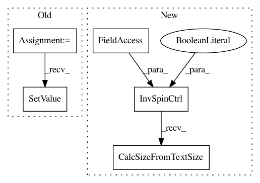

eac24f4f8f25444c3f8036b7b53e54ebee8c29b2,invesalius/gui/widgets/gradient.py,GradientCtrl,_draw_controls,#GradientCtrl#,338
Before Change
self.spin_max = intctrl.IntCtrl(self, size=(40,20),
style=wx.TE_PROCESS_ENTER)
self.spin_max.SetValue(self.maximun)
if sys.platform != "win32":
self.spin_max.SetWindowVariant(wx.WINDOW_VARIANT_SMALL)
sizer = wx.BoxSizer(wx.HORIZONTAL)
After Change
if sys.platform != "win32":
self.spin_min.SetWindowVariant(wx.WINDOW_VARIANT_SMALL)
self.spin_max = InvSpinCtrl(
self,
value=self.maximun,
min_value=self.min_range,
max_value=self.max_range,
spin_button=False,
)
if sys.platform != "win32":
self.spin_max.SetWindowVariant(wx.WINDOW_VARIANT_SMALL)
self.spin_min.CalcSizeFromTextSize()
self.spin_max.CalcSizeFromTextSize()
sizer = wx.BoxSizer(wx.HORIZONTAL)
sizer.Add(self.spin_min, 0, wx.RIGHT, 2)
sizer.Add(self.gradient_slider, 1, wx.EXPAND)
In pattern: SUPERPATTERN
Frequency: 3
Non-data size: 5
Instances
Project Name: invesalius/invesalius3
Commit Name: eac24f4f8f25444c3f8036b7b53e54ebee8c29b2
Time: 2019-04-16
Author: totonixsame@gmail.com
File Name: invesalius/gui/widgets/gradient.py
Class Name: GradientCtrl
Method Name: _draw_controls
Project Name: invesalius/invesalius3
Commit Name: eac24f4f8f25444c3f8036b7b53e54ebee8c29b2
Time: 2019-04-16
Author: totonixsame@gmail.com
File Name: invesalius/gui/task_slice.py
Class Name: WatershedTool
Method Name: __init__
Project Name: invesalius/invesalius3
Commit Name: eac24f4f8f25444c3f8036b7b53e54ebee8c29b2
Time: 2019-04-16
Author: totonixsame@gmail.com
File Name: invesalius/gui/task_slice.py
Class Name: EditionTools
Method Name: __init__